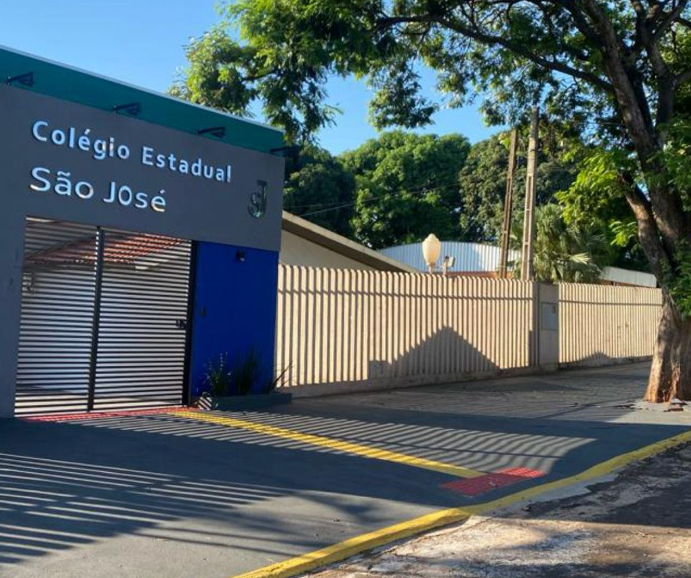

COLÉGIO ESTADUAL SÃO JOSÉ
TRABALHOS
GALERIA
DIREÇÃO/EQUIPE PEDAGÓGICA
O Colégio São José , é uma Escola Estadual localizada na cidade de Tapira, Pr. Nesta instituição de ensino atende-se a formação de Ensino Médio regular e Educação de Jovens e Adultos .
